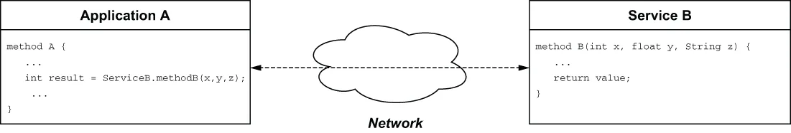
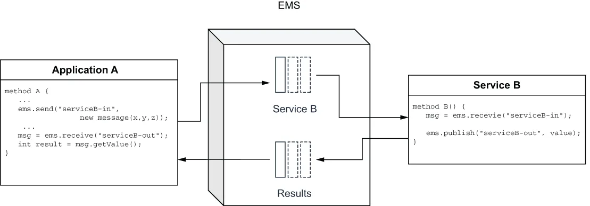

Messaging is a broad term that is used to describe the routing of data between producers and consumers. Consequently, there are several different technologies and protocols that have evolved over the years that provide this capability. Most people are familiar with messaging systems such as email, text messaging, and instant messaging applications, including WhatsApp and Facebook Messenger. Messaging systems within this category are designed to transmit text data and images over the internet between two or more parties. More-advanced instant messaging systems support Voice over IP (VoIP) and video chat capabilities as well. All of these systems were designed to support person-to-person communication over ad hoc channels.
消息传递（Messaging） 是一个宽泛的术语，用来描述数据在生产者与消费者之间的路由。因此，多年来演化出了若干不同的技术与协议来提供这种能力。大多数人都熟悉电子邮件、短信以及即时通讯应用（包括 WhatsApp 和 Facebook Messenger）这类消息系统。这一类消息系统被设计用于通过互联网在两方或多方之间传输文本数据与图像。更高级的即时通讯系统还支持 IP 语音（VoIP）与视频聊天功能。这些系统全都是为了在临时建立的通道上支持人与人之间的通信而设计的。
Another category of messaging system that people are already familiar with is video on demand streaming services, such as Netflix or Hulu, that stream video content to multiple subscribers simultaneously. These video streaming services are examples of one-way broadcast (one message to many consumers) transmissions of data to consumers that subscribe to an existing channel in order to receive the content. While these types of applications might be what comes to mind when using the terms messaging systems or streaming, for the purposes of this book, we will be focusing on enterprise messaging systems.
另一类人们已经很熟悉的消息系统是视频点播流媒体服务，例如 Netflix 或 Hulu，它们把视频内容同时流式传输给多个订阅者。这些视频流服务属于单向广播（一条消息发给多个消费者）式数据传输的范例：消费者订阅一个已有频道以接收内容。虽然在使用消息系统或流处理这类术语时，人们可能首先想到的就是这些应用，但在本书中，我们将把重点放在企业消息系统上。
An enterprise messaging system (EMS) is the software that provides the implementation of various messaging protocols, such as data distribution service (DDS), advanced message queuing protocol (AMQP), Microsoft message queuing (MSMQ), and others. These protocols support the sending and receiving of messages between distributed systems and applications in an asynchronous fashion. However, asynchronous communication wasn't always an option, particularly during the earliest days of distributed computing when both client/server and remote procedure call (RPC) architectures were the dominant approach. Prime examples of RPC were the simple object access protocol (SOAP) and representational state transfer (REST) based web services that interacted with one another through fixed endpoints. Within both of these styles, when a process wanted to interact with a remote service, it needed to first determine the service's remote location via a discovery service and then invoke the desired method remotely, using the proper parameters and types, as shown in figure 1.1.
企业消息系统（EMS） 是指提供各种消息协议实现的软件，例如数据分发服务（DDS）、高级消息队列协议（AMQP）、Microsoft 消息队列（MSMQ）（MSMQ，Windows 原生，仅 Windows，新项目不要选）等。这些协议支持分布式系统与应用之间以异步方式收发消息。然而，异步通信并非一直都是可选项，尤其是在分布式计算的早期，那时客户端/服务器与远程过程调用（RPC）架构是主流方案。RPC 的典型代表是基于简单对象访问协议（SOAP）和表述性状态转移（REST）的 Web 服务，它们通过固定端点相互交互。在这两种风格下，当一个进程想要与远程服务交互时，它必须先通过发现服务确定该服务的远端位置，然后使用正确的参数与类型远程调用目标方法，如图 1.1 所示。

Figure 1.1 Within an RPC architecture, an application invokes a procedure on a service that is running on a different host and must wait for that procedure call to return before it can continue processing.
图 1.1 在 RPC 架构中，应用调用运行在另一台主机上的服务所提供的过程，并且必须等待该过程调用返回后才能继续处理。
The calling application would then have to wait for the called procedure to return before it could continue processing. The synchronous nature of these architectures made applications based upon them inherently slow. In addition, there was the possibility that the remote service was unavailable for a period of time, which would require the application developer to use defensive programming techniques to identify this condition and react accordingly.
于是，调用方应用必须等待被调用过程返回后才能继续处理。这类架构的同步特性使得基于它们构建的应用天然就很慢。此外，远程服务还有可能在一段时间内不可用，这就要求应用开发者使用防御性编程技术来识别这种状况并作出相应处理。
Unlike the point-to-point communication channels used in RPC programming, where you had to wait for the procedure calls to provide a response, an EMS allows remote applications and services to communicate with one another via an intermediate service rather than directly with one another. Rather than having to establish a direct network communication channel between the calling/receiving applications over which the parameters are exchanged, an EMS can be used to retain these parameters in message form, and they are guaranteed to be delivered to the intended recipient for processing. This allows the caller to send its request asynchronously and await a response from the service they were trying to invoke. It also allows the service to communicate its response back in an asynchronous manner as well by publishing its result to the EMS for eventual delivery to the original caller. This decoupling promotes asynchronous application development by providing a standardized, reliable intra-component communication channel that serves as a persistent buffer for handling data, even when some of the components are offline, as you can see in figure 1.2.
与 RPC 编程中使用的点对点通信通道不同（在那里你必须等待过程调用返回响应），EMS 允许远程应用与服务通过一个中间服务相互通信，而不是直接相互通信。EMS 可以把这些参数以消息的形式保留下来，并保证投递给预期的接收方进行处理，而不必在调用方/接收方应用之间建立直接的网络通信通道来交换参数。这使得调用方可以异步发送请求，并等待它试图调用的服务返回响应。同时也允许该服务以异步方式回传响应——把结果发布到 EMS，最终投递给最初的调用方。这种解耦提供了一个标准化、可靠的组件间通信通道，充当处理数据的持久化缓冲区，即便部分组件处于离线状态也能工作，从而促进了异步应用开发，如图 1.2 所示。

Figure 1.2 An EMS allows distributed applications and services to exchange information in an asynchronous fashion.
图 1.2 EMS 允许分布式应用与服务以异步方式交换信息。
An EMS promotes loosely coupled architectures by allowing independently developed software components that are distributed across different systems to communicate with one another via structured messages. These message schemas are usually defined in language-neutral formats, such as XML, JSON, or Avro IDL, which allows the components to be developed in any programming language that supports those formats.
EMS 通过允许分布在不同系统上、独立开发的软件组件借助结构化消息相互通信，来促进松耦合架构。这些消息的 schema 通常以语言中立的格式定义，例如 XML、JSON 或 Avro IDL，这使得组件可以用任何支持这些格式的编程语言来开发。
1.1.1 核心能力